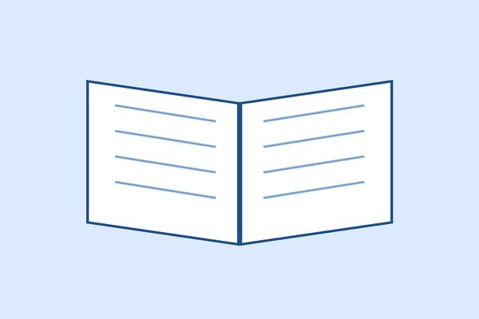
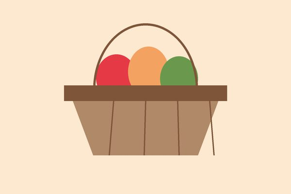
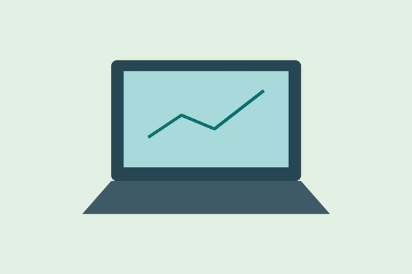

Educar para Transformar

Reforço escolar e oficinas de leitura para crianças e adolescentes.

Reforço escolar e oficinas de leitura para crianças e adolescentes.

Arrecadação e entrega mensal de cestas básicas a famílias cadastradas.

Cursos gratuitos de informática e preparação para o mercado de trabalho.
Qualquer pessoa maior de 16 anos pode doar parte do seu tempo aos nossos projetos.
Sua contribuição mantém os projetos em funcionamento.